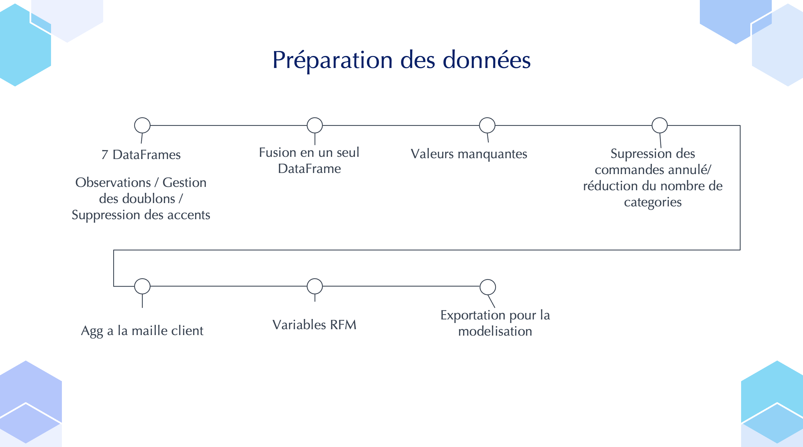
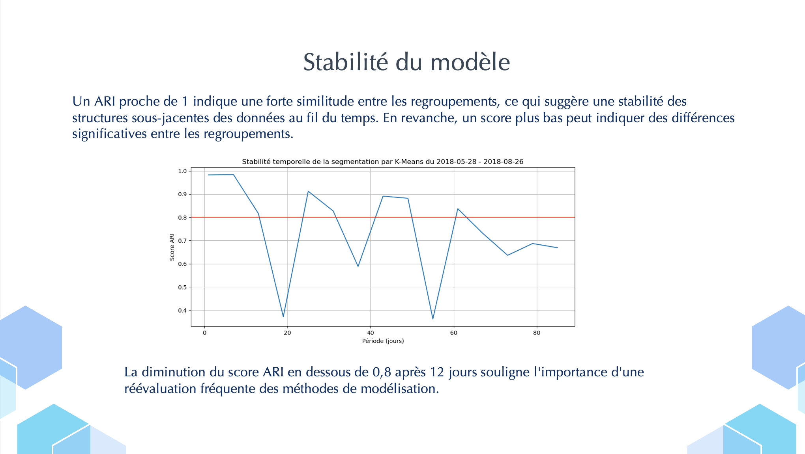
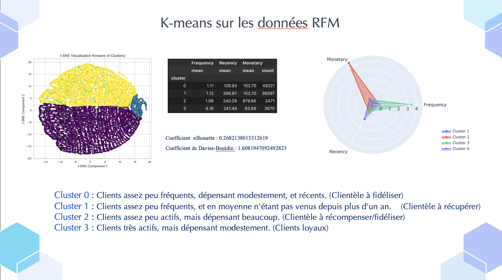

Projet de Prédiction des Émissions de CO2 à Seattle
Contexte
Dans le cadre de l'initiative de Seattle pour atteindre la neutralité en émissions de carbone d'ici 2050, ce projet se concentre sur l'analyse et la prédiction des émissions de CO2 et de la consommation d'énergie des bâtiments non résidentiels. Les données collectées en 2016 servent de base pour développer des modèles prédictifs afin d'évaluer la performance énergétique des bâtiments pour lesquels aucune mesure n’a encore été effectuée.
Objectifs
- Analyse Exploratoire : Réaliser une analyse exploratoire des données structurelles des bâtiments (taille, usage, date de construction, situation géographique) pour identifier des patterns et des insights.
- Modélisation Prédictive : Tester différents modèles de machine learning pour prédire les émissions de CO2 et la consommation d'énergie, en intégrant des variables structurelles pertinentes et en évaluant l'impact de l'ENERGY STAR Score sur les prédictions.
- Évaluation et Optimisation : Mettre en place une évaluation rigoureuse des performances des modèles, optimiser les hyperparamètres et choisir les algorithmes de machine learning appropriés via validation croisée.
Aperçu des Résultats


